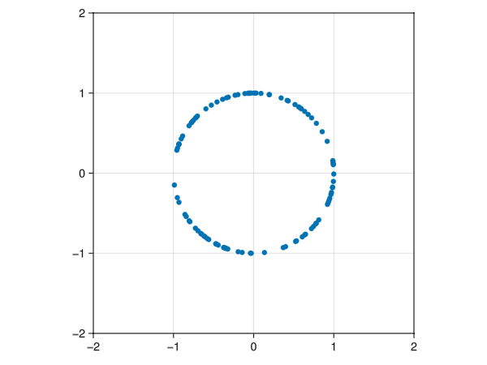

usingGLMakiefunctionmakecirc(N::Integer) A =rand(N, 2) .-0.5return A ./sqrt.(sum(A .^2, dims =2))endfunctionmakefig() fig =Figure(); ax =Axis(fig[1,1], aspect =DataAspect()) N =100 A =Observable(makecirc(N)) points =scatter!([Point2f(A[][i, 1], A[][i, 2]) for i in1:N])on(A) do mat points[1] = [Point2f(mat[i, 1], mat[i, 2]) for i in1:N]endxlims!(ax, -2, 2)ylims!(ax, -2, 2)return fig, ax, Aendfig, ax, A =makefig()save("hw2_files/figure-html/parta.png", fig)

circle of 100 points centered at the origin
Part B
Apply a stretch, rotation, and shear matrices to your circle and describe the result
Let us define the shear, rotation, and stretch matrices:
For shear we shall choose a small value for the off diagonal elements and incrementally shear the points in the circle 200 times at 60 frames per second.
and incrementally rotate the points 200 times at 60 frames per second
Code
fig, ax, A =makefig()rotation =getRotation(0.05)record(fig, "hw2_files/figure-html/rotation.mp4", 1:200, framerate =60) do i A[] = A[] * rotationend;
Stretch
For Stretching the circle we choose a value in the diagonal elements that are close to but greater than one (less than one would be shrinking) and incrementally stretch each point in the circle 200 times… where
fig, ax, A =makefig()stretch =getStretch(1.005)record(fig, "hw2_files/figure-html/stretch.mp4", 1:200, framerate =60) do i A[] = A[] * stretchend;
Part D
Do the same for a point cloud of 100 points taken from the normal distribution with 0 mean and standard deviation 1.
Code
functionpartD() fig =Figure(); ax1 =Axis(fig[1,1], title ="shear", aspect =DataAspect()) ax2 =Axis(fig[1,2], title ="rotate", aspect =DataAspect()) ax3 =Axis(fig[1,3], title ="stretch", aspect =DataAspect())xlims!(ax1, -2, 2)ylims!(ax1, -2, 2)xlims!(ax2, -2, 2)ylims!(ax2, -2, 2)xlims!(ax3, -2, 2)ylims!(ax3, -2, 2) N =100 A =Observable(randn(N, 2)) B =Observable(randn(N, 2)) C =Observable(randn(N, 2)) points1 =scatter!(ax1, [Point2f(A[][i, 1], A[][i, 2]) for i in1:N]) points2 =scatter!(ax2, [Point2f(B[][i, 1], B[][i, 2]) for i in1:N]) points3 =scatter!(ax3, [Point2f(C[][i, 1], C[][i, 2]) for i in1:N]) on(A) do mat points1[1] = [Point2f(mat[i, 1], mat[i, 2]) for i in1:N]endon(B) do mat points2[1] = [Point2f(mat[i, 1], mat[i, 2]) for i in1:N]endon(C) do mat points3[1] = [Point2f(mat[i, 1], mat[i, 2]) for i in1:N]endrecord(fig, "hw2_files/figure-html/partd.mp4", 1:200, framerate =60) do i A[] = A[] * shear B[] = B[] * rotation C[] = C[] * stretchend;endpartD();
Problem 2
Consider a population that has been locally extirpated. Your job is to recover this population by transplanting some individuals. The expected dynamics are given by
where \(j_t\) and \(a_t\) indicate the abundance of juveniles and adults, respectively.
Part A
Let \(\vec{x}_t = \left[J_tA_t\right]^T\) be a vector representing the abundance of individuals in each class. Re-write the given pair of equations as \(\vec{x}_{t+1} = A\vec{x}_t\)
You can either transplant 10 juveniles, 10 adults, or 7 each. Simulate the dynamics over 10 steps and plot the total abundance to decide which is best for a speedy recovery.
![]()